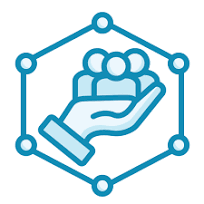

Queremos aproximar pessoas do mundo digital, oferecendo mais acesso à tecnologia e novas oportunidades.

Inclusão digital é garantir que todas as pessoas tenham acesso à tecnologia e saibam utilizá-la no dia a dia.
Ter acesso a celulares, computadores e internet.
Aprender a utilizar ferramentas e serviços digitais.
Usar a tecnologia para estudar, trabalhar e se comunicar.
Muitas pessoas ainda não possuem computador, celular ou acesso adequado à internet. Isso pode dificultar os estudos, a procura por emprego e até a comunicação com outras pessoas.
Nosso objetivo é arrecadar computadores, notebooks, celulares e contribuições para ajudar pessoas com pouco ou nenhum acesso à tecnologia.
Receber equipamentos em boas condições para dar a eles um novo uso.
Receber ajuda para adquirir e preparar equipamentos.
Contar com pessoas dispostas a ensinar e ajudar.
Escolha uma forma de participar do nosso projeto: